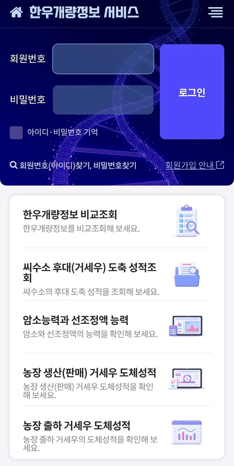
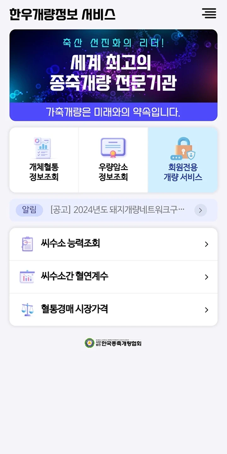
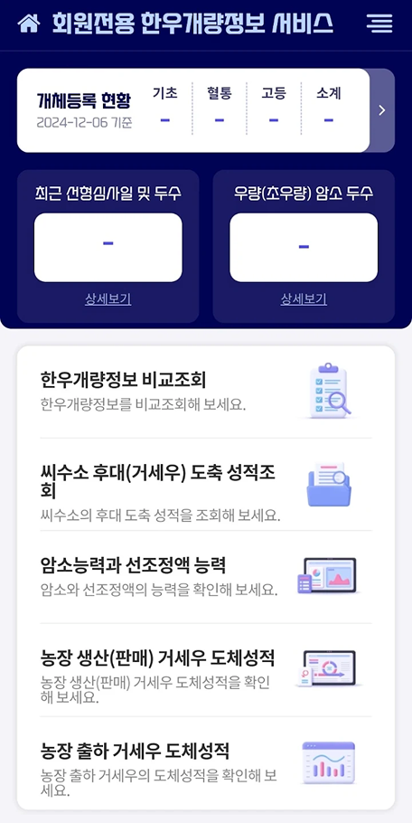
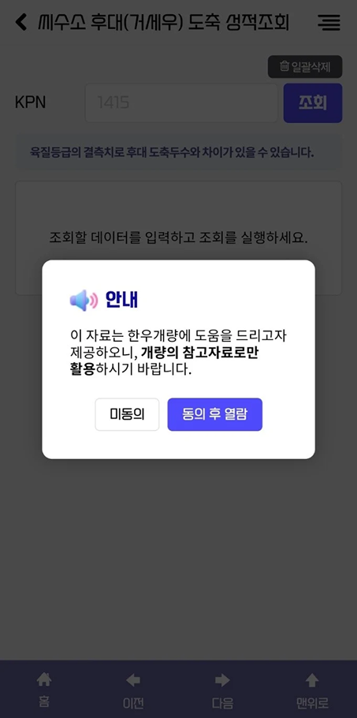

Overview
초기 디자인 방향성을 기반으로 앱 전반의 UI를 설계하고, 기능별 화면을 일관된 디자인 시스템으로 확장했습니다. 주요 서비스 화면의 레이아웃과 컴포넌트를 정리하여 직관적인 사용 경험을 제공할 수 있도록 디자인했습니다.
초기 디자인 방향성을 기반으로 앱 전반의 UI를 설계하고, 기능별 화면을 일관된 디자인 시스템으로 확장했습니다. 주요 서비스 화면의 레이아웃과 컴포넌트를 정리하여 직관적인 사용 경험을 제공할 수 있도록 디자인했습니다.



